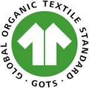
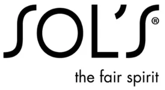
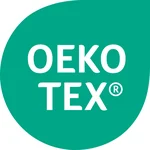

Home › Materials
Materials
Organic cotton and material certificates
By default we embroider organic cotton blanks by Stanley/Stella with Madeira threads, in our workshop in Karlsruhe.
Request a quote Our productionThe materials we use
By default we embroider organic cotton blanks by Stanley/Stella with Madeira threads, in our workshop in Karlsruhe. On request we also embroider brands such as Russell, SOL'S and Result, or your own garments.
- Blanks: organic cotton by Stanley/Stella
- Threads: Madeira
- Other brands on request: Russell, SOL'S, Result, Larkwood, Babybugz, Jollein
- Production in Karlsruhe, neutral packaging on request
Certificates and who holds them
These certificates belong to the manufacturers of our materials. Here is who holds what and where the numbers are:



| Material | Certificate holder | Certificate | Number | Certifier | Valid until |
|---|---|---|---|---|---|
| Blanks Stanley/Stella | Stanley and Stella SA | GOTS (Global Organic Textile Standard) | Licence CB-GOTS-CUC-03-819434 Scope certificate CU819434GOTS-2026-00065558 | Control Union Certifications | 23 Jun 2027 |
| Embroidery threads Madeira | Madeira Garnfabrik Rudolf Schmidt KG | OEKO-TEX® STANDARD 100 | No. 94.0.6007 | Hohenstein | 30 Jun 2027 |
| Blanks Russell | Russell (russelleurope.com) | OEKO-TEX® STANDARD 100 | 08-5941 and 11-73565 (according to the manufacturer's website) | Shirley | – |
| Blanks SOL'S | SOL'S | OEKO-TEX® STANDARD 100 | according to the product page, e.g. Legacy: CQ 1094/1 | IFTH | – |
As of 25 Oct 2026. The information on Russell and SOL'S reflects manufacturer statements (manufacturer website and product page). We make no certificate statements for Result, Larkwood, Babybugz and Jollein.
What the certificates cover
- The certificates belong to the manufacturers and cover their materials.
- The certification applies to blanks and threads, not to the embroidered end products and not to BRODIRA as a workshop.
- BRODIRA is not itself GOTS- or OEKO-TEX®-certified, and our embroidered products do not carry a GOTS or OEKO-TEX® label.
- Whether a specific delivery is GOTS goods is proven by the manufacturer's transaction certificate.
- Your own garments and other brands are not automatically certified; we tell you beforehand.
Why organic cotton?
Organic cotton comes from organic farming. For the Stanley/Stella blanks, this is covered by the manufacturer's GOTS certification.
Promotional textiles made of organic cotton
Embroidered organic cotton textiles work well as promotional items and gifts.
Materials – FAQ
What does GOTS mean?
The Global Organic Textile Standard is the leading label for textiles made from organically grown natural fibres – with ecological and social criteria across the entire supply chain.
Which embroidery threads do you use?
Embroidery threads by Madeira. The manufacturer holds an OEKO-TEX® STANDARD 100 certificate for them (no. 94.0.6007).
Request embroidery on organic cotton
Want textiles made of organic cotton embroidered? Tell us about your project – we will make a quote.
Request a quoteNext: Logo embroidery · Corporate wear · Embroidery Karlsruhe